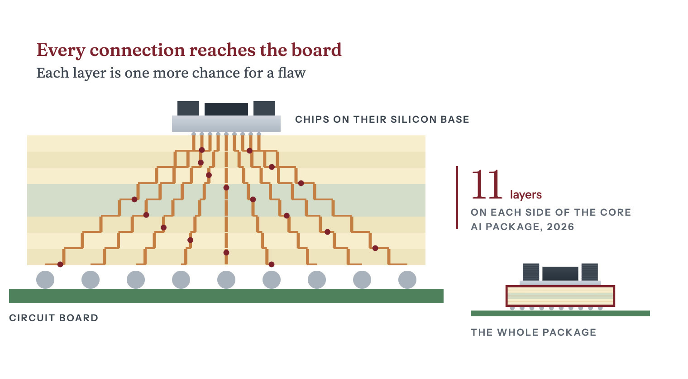

Stage 11 of 14Extreme concentrationHard to substitute
Chapter 11: Substrates and PCBs
Ajinomoto, a Japanese food company, told investors in June 2026 that its build-up film, the insulation inside high-end chip packages, has held over 95 percent of its market since its launch.
Sharma, Yashvardhan. “Substrates and PCBs.” Chip Supply Chain: How AI Chips Are Made. Updated 29 October 2026. https://chipsupplychain.org/substrates-and-pcbs/
A build-up substrate, the board a chip sits on, with a quarter cut away. It is about 100 by 72 mm and 1.5 mm thick, with eighteen copper layers inside. The olive-green bands are the build-up film between the copper layers. The footprint is to scale, but the thickness is exaggerated about twenty times.
In plain terms
A is the adapter between a and the under it. The chip’s connections are finer than a human hair, but the board is wired in millimeters. The substrate is built in layers, like plywood, around a stiff core of and resin. Thin sheets of epoxy film are pressed onto both faces of the core. A laser burns holes through each sheet, and copper plated into the holes carries signals from one layer to the next. Every added layer is another set of holes that can fail. A handful of firms build these substrates, and two of the materials inside them come mainly from Japanese makers. Ajinomoto dominates the film, and Nitto Boseki dominates the low-expansion glass cloth in the core.
In short
Ajinomoto’s third site for making its , in Gifu Prefecture, is scheduled to start operating in 2032 to meet demand after 20301. Nitto Boseki says market demand seems to have risen about two to three times since it set its plan for fiscal 2024 to 20272. In January 2026 Nikkei Asia reported that Apple and Qualcomm were among the customers worried about Japanese supply3. In August 2026 Ibiden said it had prospects of a third and fourth glass cloth supplier and expected its material procurement risks to decrease4.
The wires together inside a package. Beyond the interposer, the wiring runs through a made of epoxy and glass, then a that can have more than 30 layers, then a server 5.
- Who leads
- JPAjinomoto Told investors in June 2026 that its build-up film has held over 95 percent of its market since its launch8
- JPNitto Boseki Claimed an overwhelming advantage in low thermal expansion glass in its 2025 integrated report2
- JPIbiden Said in May 2026 that it typically takes close to 100 percent of each new generation of interposer-type substrates at launch9
- TWUnimicron Build-up substrates were 52 percent of sales in Q2 202610
- KRSamsung Electro-Mechanics Package solution sales KRW 771.6bn in Q2 2026, up 37 percent11
- Where it is made
- JPJapan Build-up film, low-expansion glass cloth, Ibiden and Shinko substrate plants in Gifu and Nagano
- TWTaiwan Unimicron and Nan Ya PCB, substrate makers that sell to outside customers
- KRSouth Korea Samsung Electro-Mechanics and a planned glass-core joint venture with Sumitomo Chemical’s Dongwoo Fine-Chem
- CNChina Most of TTM’s circuit board competitors are based in China and Taiwan
- ATAustria AT&S
TTM, an American maker, said in its annual report for 2025 that its circuit board competitors are mostly based in China and Taiwan5. Nitto Boseki, a Japanese glass fiber maker, said in its 2025 integrated report that Chinese and Taiwanese companies are aggressively catching up with it in the special glass sector2.
How a package substrate is built
How a substrate fans out

- The package. An AI chip is more than the chip itself. It sits in a package: the chips on a silicon base, and under them the substrate, which connects everything to the circuit board.
- Tight to wide. The connections on top are packed tight. The circuit board below is wired in millimeters. The substrate has to join the two.
- Layer by layer. The substrate does it in layers, built outward from a stiff core. Each layer carries the copper a little further out.
- Connected. Stacked together, the layers fan the tight grid out to the board’s wide one. Ajinomoto counts 11 layers of its film on each side of the core in a 2026 AI package substrate, against three on each side for a PC in 1999. Every layer is another chance for a flaw, which is what makes these substrates hard to build.
The substrate maker drills the core and plates it with copper before the build-up starts. In each cycle the maker then presses on a film of epoxy, burns holes through it with a laser to connect the layers, and adds copper wiring on top15. Each film is about 10 thick, and a human hair is about 80 micrometers across16.
Substrates for AI chips are larger and carry more layers of film than older ones. Ajinomoto counts 11 layers of its film on each side of the core in a 2026 AI package substrate about 100 mm square17. A substrate about 70 mm square had nine on each side around 202317. PC substrates had three layers of the film on each side when PCs first adopted it in 199917.
Silicon and epoxy expand at different rates when heated, so the larger the package, the more it warps. Nitto Boseki says its low-expansion cloth is highly rated as an effective fix for that warping18. It says use of the cloth in substrates has increased significantly, without giving a figure18.
Types of package substrates
BT substrates
Substrates built on bismaleimide-triazine , or BT, are the other main family. Mitsubishi Gas Chemical, which makes BT materials, says they go mostly into thin packages for smartphone processors, radio modules and memory19. The company says BT also goes into flip-chip substrates for computer CPUs and 19. In these the chip is mounted face down, and BT laminate also serves as the core of a build-up substrate, between layers of 20. In an October 2024 investor presentation, the company estimated that its BT resins held about 40 percent of what it calls the substrate materials market, the top share21.
ABF build-up substrates
One company, Ajinomoto, supplies nearly all the insulating film inside package substrates for . Ajinomoto Build-up Film, or ABF, is the insulating film between the layers of package substrates for logic chips, used in PCs, network equipment, servers and AI equipment12. Ajinomoto first developed it in 1999 and says major chipmakers have used it as the de facto standard ever since22. On Ajinomoto’s own site, its electronic materials division said practically all high-performance computers and servers rely on the film16. In June 2026 Ajinomoto told investors that the film has held over 95 percent of its market since its launch8.
Substrate film layers rose from 3 in 1999 to 11 in 2026
Layers of build-up film on each side of a package substrate’s core
| PC, 1999 | 3 layers |
|---|---|
| HPC, about 2023 | 9 layers |
| AI package, 2026 | 11 layers |
Sharma, Yashvardhan. “Figure 11.2: Layers of build-up film on each side of a package substrate’s core.” Chip Supply Chain: How AI Chips Are Made. Updated 29 October 2026. https://chipsupplychain.org/substrates-and-pcbs/#fig-substrates-and-pcbs-abf-layers. Data: Ajinomoto, Growth Strategy for the Electronic Materials Business, June 2026.
Glass core substrates
A glass core expands less with heat than a resin core and stays flatter, so chipmakers and substrate makers are both trying it23.
- Absolics, a subsidiary of Korea’s SKC, has a final US Commerce Department award of up to $75 million for a 120,000-square-foot glass substrate plant in Covington, Georgia24. The department finalized the award in December 202414. As of October 2026, the award’s project page at NIST, a Commerce Department agency, still said first deliveries to customers were expected in 2025 and production capacity in 2027, without saying whether those deliveries had happened24.
- Intel said in September 2023 that it planned glass substrates for the latter part of the 2020s25.
- Samsung Electro-Mechanics signed a joint venture agreement with Sumitomo Chemical’s subsidiary Dongwoo Fine-Chem in July 2026 to make glass core substrates26. The partners plan to have a supply system in place by the second half of fiscal 202726.
Ajinomoto’s film and Nitto Boseki’s glass cloth
Ajinomoto’s electronic materials revenue is rising, and it is adding film capacity, but its third production site is not scheduled to open until 2032. Ajinomoto’s Healthcare and Others segment, which includes electronic materials such as the film, lifted business profit 45.1 percent to JPY 66.2 billion in the year to March 202627. Ajinomoto attributes the rise mainly to higher electronic materials revenue and higher profit in Bio-Pharma Services & Ingredients27. It has set an investment budget of JPY 25 billion between 2023 and 2030 to expand film production28. It says it has no concerns about its current supply chain overall and will steadily expand its supply capacity over the medium to long term8. In May 2026 it announced the acquisition of land in Gifu Prefecture for a third production site, scheduled to start operating in 2032 to meet demand after 20301.
The glass cloth in the core also has a dominant supplier. Nitto Boseki’s T-glass is stiff and expands little when heated, and the company calls it essential for making high-density package substrates29. Laminate makers such as Mitsubishi Gas Chemical coat the glass cloth with resin and press it with copper foil into the core laminate that substrate makers build on30.
Nitto Boseki says market demand seems to have risen about two to three times since it set its plan for fiscal 2024 to 20272. That plan included about JPY 80 billion of 31. The company claims an overwhelming advantage in quality and capacity for low-expansion glass2. In August 2025 it decided to expand glass fiber cloth production at its Fukushima Enterprise Center, with production scheduled to begin in the fourth quarter of its fiscal 202632. In May 2026 it forecast capital investment of JPY 45,000 million for the year to March 2027, up from JPY 21,702 million in the year to March 202633.
In January 2026 Nikkei Asia reported that Apple and Qualcomm were among the customers worried about Japanese glass cloth supply3. In August 2026 Ibiden, a Japanese substrate maker, said it had used only two glass cloth suppliers, in Japan and Taiwan, but now had prospects of a third and fourth for 4. Because a Japanese supplier, which Ibiden did not name, also plans to add capacity, Ibiden said it expected its material procurement risks to decrease4.
Nitto Boseki says Chinese and Taiwanese companies are aggressively catching up with it in the special glass sector2. In July 2026 Nikkei Asia reported that Chinese chip materials makers were competing with Japanese rivals in the market for chip materials, which the industry association SEMI put at $73.2 billion in 202534.
Who makes package substrates
Most of the firms that build substrates for others are Asian. The White House’s 2021 hundred-day supply chain review listed build-up substrate among the materials that commenters called vulnerable35. It named key substrate makers including Ibiden, Nanya, Shinko, Samsung, Unimicron, Shennan Circuits, Zhuhai Yueya and AKM, none of them American13.
A May 2024 report by the Semiconductor Industry Association and Boston Consulting Group found that every major package substrate vendor was headquartered in Japan, Taiwan or mainland China36. It counted two in Japan, two in Taiwan, one in mainland China and none in the United States36. But TTM Technologies, an American circuit board maker, says it offers package substrates too5.
- Ibiden will invest about JPY 500 billion in high-performance package substrates from fiscal 2026 to fiscal 2028, starting with about JPY 220 billion, mainly at its Gama plant in Gifu Prefecture37. In August 2026 it said the Gama plant was scheduled to start operating in stages from the end of fiscal 2027 and to add to its results from fiscal 20284. In May 2026 management said Ibiden typically takes close to 100 percent of each new generation of what it calls interposer-type substrates at launch9. It added that this share may decline by 20 to 30 percent after about three to six months9. On substrates, it said wiring the underside is hard enough that Ibiden expects to keep its technical lead at least through fiscal 20309.
- Unimicron reported NT$42.9 billion of sales in the second quarter of 202610. By technology, 52 percent came from build-up substrates, and by application, 61 percent came from AI data center work10.
- Samsung Electro-Mechanics grew package solution sales 37 percent year on year to KRW 771.6 billion in the second quarter of 2026, on substrates for AI , server processors and cars11.
- AT&S, an Austrian firm, calls itself a globally leading maker of high-end package substrates38. It makes them in China and Malaysia, and since its 2025/26 financial year also in Austria39. Citing the research firm Prismark, its annual report for 2025/26 valued the market for flip-chip (FC-BGA) substrates at $7.5 billion in 2025, up 18 percent from 20247.
In February 2025 a company owned mainly by funds of JIC Capital launched a tender offer to take Shinko, a Japanese substrate maker, private40. JIC Capital is a wholly owned subsidiary of Japan Investment Corporation, an investment company set up in September 2018 under Japan’s Industrial Competitiveness Enhancement Act to pursue policy goals such as stronger industrial competitiveness41. Fujitsu, which owned 50.02 percent of Shinko, agreed to sell that stake back to Shinko, and the offer covered the shares Fujitsu did not own42. The tender offer succeeded in March 202543.
In September 2026 Shinko agreed to buy a plant in Mobara, Chiba Prefecture, from Japan Display, a display maker44. Shinko said it would make the site a new core plant for its flip-chip package substrates and would also expand capacity at its plants in Nagano44. Production at the Mobara plant is scheduled to start in fiscal 202844.
ABF substrates were 52 percent of Unimicron’s second-quarter 2026 sales
Unimicron sales by technology, second quarter 2026
| ABF substrate | 52% |
|---|---|
| HDI | 27% |
| BT substrate | 9% |
| PCB | 9% |
| FPC | 2% |
| Other | 1% |
Sharma, Yashvardhan. “Figure 11.3: Unimicron sales by technology, second quarter 2026.” Chip Supply Chain: How AI Chips Are Made. Updated 29 October 2026. https://chipsupplychain.org/substrates-and-pcbs/#fig-substrates-and-pcbs-unimicron-mix. Data: Unimicron 2026 Q2 earnings conference, July 2026.
Printed circuit boards for AI data centers
TTM Technologies says it regularly builds printed circuit boards of more than 30 layers and can go past 705. Those layers carry power to the GPUs and route fast signals between them, so how much signal the laminate absorbs is a main design constraint. Nitto Boseki also makes NE-glass, a low- glass cloth that absorbs less signal, used in switches and routers in data centers45.
Data center computing was 24 percent of TTM’s fiscal 2025 revenue of about $2.9 billion, against 14 percent two years earlier5.
Board makers are adding plants outside China and Taiwan, where TTM says most of its circuit board competitors are based5. In its annual report for 2025, TTM said it was building a plant in Syracuse, New York, to make ultra-high-density circuit boards for national security needs5. It expected volume production there in the second half of 20265. Nikkei Asia reported in September 2025 that Thailand aimed to become the biggest circuit board hub outside China as board makers moved to diversify production46.
Why substrate supply is hard to expand
The few firms that build substrates are spending to add capacity, but it takes years. In August 2026 Ibiden said that, with supply short across the industry, the average price of package substrates had risen more than it expected4. The materials inside the substrate are harder to replace than the firms that build it. Mitsubishi Gas Chemical, a laminate maker, says chipmakers and electronic device makers further down the chain approve the materials it sells to substrate makers6. So a rival to Ajinomoto’s film or to Nitto Boseki’s low-expansion glass cloth would first need approval from those chipmakers and device makers.
Packages are also getting bigger. TSMC told investors in July 2026 that its packaging roadmap goes beyond 14 times the area a can print in one shot47. A bigger package warps more and needs more layers, so it has more holes that can break the circuit. That lowers , the share of substrates that come out working.
Flashcards
Recall each answer, then turn the card.
What does a package substrate do?
It connects a chip’s hair-fine contacts to a circuit board wired in millimeters.
How is a substrate built?
In layers around a stiff core. A laser burns holes through each layer of film, and copper in the holes carries signals from layer to layer.
Which company makes nearly all the insulating film in substrates?
Why is Ajinomoto’s film hard to replace?
Chipmakers and device makers would first have to approve any rival film.
Four things to remember
- A package substrate connects a chip’s fine contacts to a circuit board wired in millimeters.
- One Japanese supplier leads the market for the substrate’s insulating film, and another leads the market for its glass cloth.
- Replacing the film would mean re-approval by every substrate maker and chip customer.
- The White House’s 2021 supply chain review named no American firm among the key substrate makers. Absolics is building a glass substrate plant in Georgia, and a Commerce Department agency expects its production capacity to come online in 2027.
Sources (47)
Source tiers A company filings, governments, standards bodies, universities and research institutions. B SemiAnalysis, Reuters, the Financial Times and Nikkei Asia.
- AAjinomoto, Growth Strategy for the Electronic Materials Business, 30 June 2026
- ANittobo Group Integrated Report 2025
- BApple and Qualcomm fret over strained supplies of Japan’s glass cloth
- AIbiden, questions and answers from the financial presentation for the first quarter of the year ending 31 March 2027
- ATTM Technologies, annual report on Form 10-K for the fiscal year ended 29 December 2025
- AElectronics Materials Business (Mitsubishi Gas Chemical business briefing)
- AAT&S Annual Report 2025/26
- AAjinomoto, Growth Strategy for the Electronic Materials Business, 30 June 2026
- AIbiden, questions and answers from the financial presentation for the year ended 31 March 2026
- AUnimicron 2026 Q2 Earnings Conference
- ASamsung Electro-Mechanics, Q2 2026 business results
- AAjinomoto, Growth Strategy for the Electronic Materials Business, 30 June 2026
- ABuilding Resilient Supply Chains, Revitalizing American Manufacturing, and Fostering Broad-Based Growth: 100-Day Reviews under Executive Order 14017
- ABiden-Harris Administration Announces CHIPS Incentives Awards with Absolics and Entegris to Support Development of Advanced Packaging Technology and Onshore Material for Leading-Edge Chip Production
- AAjinomoto, Growth Strategy for the Electronic Materials Business, 30 June 2026
- AThe Ajinomoto Group’s Unexpected Role in Semiconductor Manufacturing: The Insulating Film “ABF” Born from “AminoScience”
- AAjinomoto, Growth Strategy for the Electronic Materials Business, 30 June 2026
- ANittobo Group Integrated Report 2025
- AElectronics Materials Business (Mitsubishi Gas Chemical business briefing)
- AElectronics Materials Business (Mitsubishi Gas Chemical business briefing)
- AElectronics Materials Business (Mitsubishi Gas Chemical business briefing)
- AAjinomoto, Business Briefing: ABF-Based Growth Strategy in ICT, 12 June 2023
- ASamsung Electro-Mechanics Signs MOU with Sumitomo Chemical Group to Establish a Joint Venture for Glass Core Used in Package Substrates
- AAbsolics (Georgia)
- AIntel Unveils Industry-Leading Glass Substrates to Meet Demand for More Powerful Compute
- ASumitomo Chemical Subsidiary to Establish of a Joint Venture with Samsung Electro-Mechanics for the Glass Core Substrate Business
- AConsolidated Financial Results for the Fiscal Year Ended March 31, 2026 (Under IFRS)
- AAjinomoto, Growth Strategy for the Electronic Materials Business, 30 June 2026
- ANittobo Group Integrated Report 2025
- AElectronics Materials Business (Mitsubishi Gas Chemical business briefing)
- ANittobo Group Integrated Report 2025
- ANittobo Group Integrated Report 2025
- AConsolidated Financial Results for the Fiscal Year Ended March 31, 2026
- BChina chip material makers battle Japan rivals for $73bn market
- ABuilding Resilient Supply Chains, Revitalizing American Manufacturing, and Fostering Broad-Based Growth: 100-Day Reviews under Executive Order 14017
- AEmerging Resilience in the Semiconductor Supply Chain
- AIbiden, Notice Regarding Capital Investment Plan for High-Performance IC Package Substrates
- AAT&S Annual Report 2025/26
- AAT&S Annual Report 2025/26
- AAnnouncement Regarding Commencement of the Tender Offer for the Shares of Shinko Electric Industries Co., Ltd. (Securities Code: 6967) by JICC-04, Ltd.
- AAnnouncement Regarding Commencement of the Tender Offer for the Shares of Shinko Electric Industries Co., Ltd. (Securities Code: 6967) by JICC-04, Ltd.
- AAnnouncement Regarding Commencement of the Tender Offer for the Shares of Shinko Electric Industries Co., Ltd. (Securities Code: 6967) by JICC-04, Ltd.
- A(Progress Report on Disclosed Matters) Notice Regarding Completion of JICC-04’s Tender Offer for Shares of a Consolidated Subsidiary of Fujitsu Limited (SHINKO ELECTRIC INDUSTRIES CO., LTD.)
- ANotice Concerning the Acquisition of Japan Display Inc.’s Mobara Fab
- ANittobo Group Integrated Report 2025
- BThailand carves out a less-glamorous AI niche: printed circuit boards
- AQ2 2026 Taiwan Semiconductor Manufacturing Co Ltd Earnings Call (Chinese, English) — edited transcript